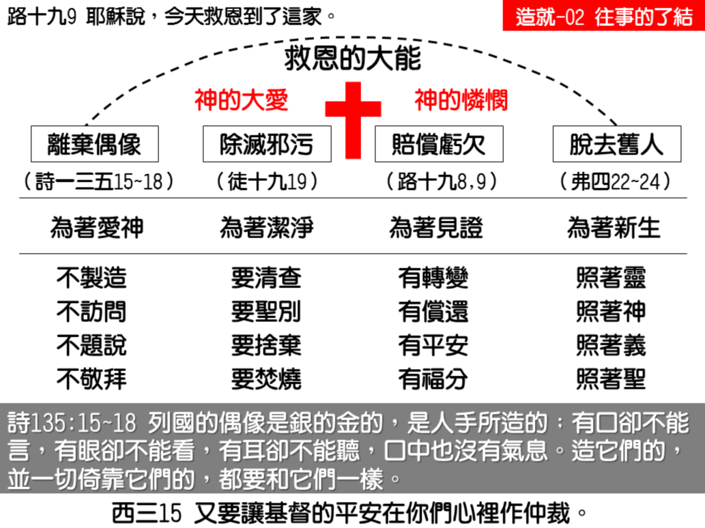

诗 歌：743 首、补 310首
读经：
帖撒罗尼迦前书一章九节：你们又是怎样离弃了偶像转向神，来服事又活又真的神。
使徒行传十九章十九至二十节：又有许多行巫术的人，把书拿来，堆在众人面前烧燬了。他们计算书价，便知道共合五万银币。这样，主的话便强有力的扩长，而且得胜。 。
路加福音十九章八至九节：撒该站着，对主说，主阿，看哪，我把家业的一半给穷人，我若讹诈了谁，就还他四倍。耶稣说，今天救恩到了这家，因为他也是亚伯拉罕的子孙。
纲 目 要 点：
壹 圣经的教训是神注重人得救后生命的改变，过于往事的了结——路三11～14，林前六 9~11。
贰 往事的了结非得救的条件，乃是神救恩的大能：
一 往事的了结是根据神爱我们的大爱，根据于神丰富的怜悯，是祂替我们解决了—弗二 1~5。
二 我们的得救并不根据如何对付已往，乃是靠着主耶稣十字架的拯救得救，这是根基。
叁 新约中往事了结的榜样：
一 偶像的事必须彻底解决——帖前一9：
1 保守自己要远避偶像。
2 不题别神的名号。
二 不正当的东西应当有了结——徒十九19~20。
三 亏欠人的应该赔偿——路十九8~9：
1 是圣灵感动与救恩大能的结果。
2 为着作得救后生命改变的明证。
信息选读：
圣经的教训都是讲今后该如何
全部圣经，从旧约到新约，特别是新约，神不注重一个人没有信主之前的那些事。你试从马太一章想到启示录二十二章，你能找到几处地方，讲到信主的人对于他已往的事该如何了结？你如果去读，你要说，实在难找得很。你们看以弗所书，歌罗西书，帖撒罗尼迦前书，都题到我们的已往如何，但是没有讲到那些已往的应该如何了结，只讲到从今以后应该如何。
以弗所四章十七至二十四节，也是讲到我们从前的光景：“所以我这样说，且在主里见证，你们行事为人，不要再像外邦人在他们心思的虚妄里行事为人，他们在悟性上既然昏暗，就因着那在他们里面的无知，因着他们心里的刚硬，与神的生命隔绝了；他们感觉既然丧尽，就任凭自己放荡，以致贪行种种的污秽…在从前的生活样式上，脱去了旧人，这旧人是照着那迷惑的情欲败坏的；而在你们心思的灵里得以更新，并且穿上了新人；这新人是照着神在那实际的义和圣中所创造的。”
五章三至四节：“至于淫乱，并一切污秽，或是贪婪，在你们中间连题都不可，如此才与圣徒相宜。还有淫辞，妄语，或是粗鄙的戏言，都不相宜，宁可说感谢的话。”这些话还是刚才的原则，都是讲到从今以后的事，信主以后的事，而不是讲信主以前的事该如何了结。
往事的了结非得救的条件，乃是神救恩的大能
你把所有的书信看过之后，你能够找出一个顶奇妙的真理－神所注重的，乃是一个人信主以后该怎么作。对于信主以前的事，神没有注重，没有对我们说该怎么作。因为有许多错误的福音，过度的注重对付已往，结果有许多人陷在捆绑里。我们不是不对付已往，有几件事情我们是要对付，但是根基不是这一个。神所着重的点，总是我们已往的罪都在血底下；因着主耶稣替我们死，我们完全得着赦免，我们得救了。我们的得救并不根据如何对付已往。人不是靠已往的好行为得救，人也不是因为悔改已往不好的行为得救。人是靠着主耶稣十字架的拯救得救。这是根基，我们要把得牢。
偶像的事必须彻底解决
帖前一章九节：“离弃了偶像转向神。”一个人信主的时候，偶像的事必须解决。请你记得，你是圣灵的殿。神的殿和偶像有什么相同呢？申命记十二章三十节说，“不可寻求他们的神，说，这些国民怎样事奉他们的神。”这给我们知道，连查问这些外邦神是怎样敬拜的，都是不应该作的事。约翰说，“孩子们！你们要保守自己，远避偶像。”远避的意思就是不要接近。诗篇十六篇四节说，“我嘴唇也不题别神的名号。”还有各种迷信的事，为着命运而有的顾忌，怕这个，怕那个的意思，话语，都不该有。许多信徒还在那里注意说，他的命运如何，他的相貌如何，他的前途如何，这些关于算命看相一类的事，也要禁止的。一切在偶像范围里的东西，都应当在神面前一了百了，完全脱离关系。
这是圣经里对付已往的第一件事－要拒绝已往的偶像。人要拒绝偶像，等候神的儿子第二次降临。连主耶稣的像也不应该保留。那不是主耶稣真的样子，没有任何的价值。在罗马的博物馆里头，有二千多种主耶稣的像，根本都是画家的理想。神是忌邪的神，神不能让这些事存在。任何的迷信都不能有。比方人说，这几天气色不大好，运气坏得很，这种话完全是地狱里出来的。神的儿女第一天就得把它扫光，彻底的解决，不能让偶像的气味进来。
不正当的东西应当有了结
行传十九章十九节：“又有许多行巫术的人，把书拿来，堆在众人面前烧毁了。他们计算书价，便知道共合五万银币。”这一件事也是初信的人应当了结和对付的。但这并不是命令，不是教训，乃是圣灵工作的结果。圣灵作工到一个地步，他们把不该有的东西拿出来。这里说五万块银币，可见是相当值钱。不是说把它卖了给召会用，而是把它烧了。如果有犹大在，一定不肯。这不只是三十两银子可以周济穷人。但主喜欢把它用火烧掉。
一个人信主之后，就应当回家去检查他自己的东西。在一个不信的人家里，已往总是有一些东西是与罪有关的，有的也许是与圣徒的体统不合的。此外有许多可疑惑的东西，也要解决。有的东西，明知道是和罪有关系的，如各种赌具，不正当的书画，非烧掉毁掉不可。也许还有许多奢侈品，过分享受的东西，虽然不能把它焚烧，但也得对付。不过焚烧是一个原则。
亏欠人的应该赔偿
路加十九章八节：“撒该站着，对主说，主阿！我把所有的一半给穷人；我若讹诈了谁，就还他四倍。”撒该这样作，不是出于道理的教训，乃是由于圣灵的感动。如果是道理的教训，就不能多，也不能少。若是圣灵的感动，就多一点也可以，少一点也可以。在这里只讲原则。所以你们读圣经的时候要清楚，这不是讲教训，这是圣灵作工的时候所引导的。
请你们记得，撒该拿出四倍来，乃是为着见证。当时大家都说，主怎么能够到这一个罪人家里去？这一个人勒索了多少人，这一个人讹诈了多少人！大家都不佩服。这时撒该站起来说：我如果勒索了什么人，我就还他四倍。这一个四倍的归还，不是作亚伯拉罕子孙的条件。这一个四倍的归还，不是神的救恩临到这一家的条件。这一个四倍的归还，乃是神的救恩临到这一家的结果。这一个四倍的归还，乃是作了亚伯拉罕子孙的结果。因为有这一个恢复的行为的缘故，所以在人面前就有见证。这就是见证的根基。
课程复习
一 往事的了结是得救的条件吗？
二 我们得救的根基是什么？
三 我们对于偶像的态度应如何？
四 对于邪污之物应如何处理？
五 我们从撒该赔偿亏欠的事例学得什么？
